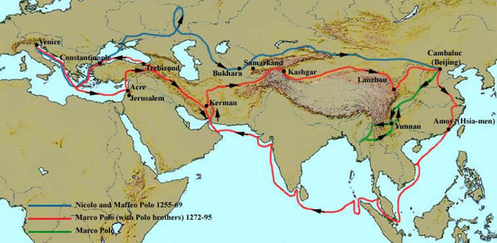
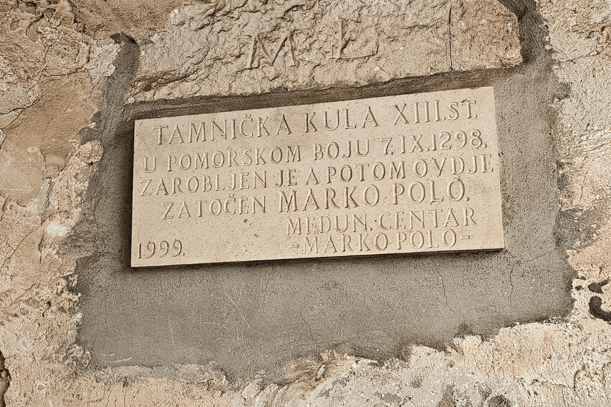
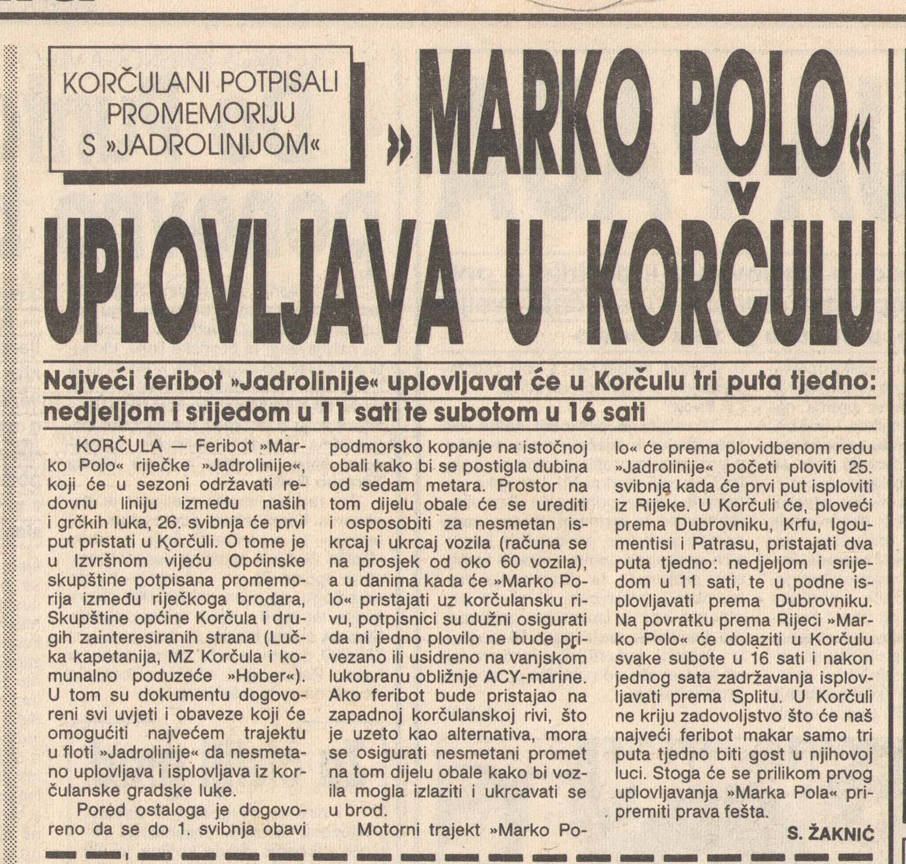
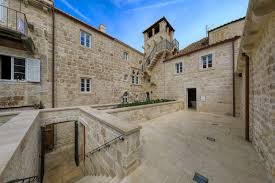
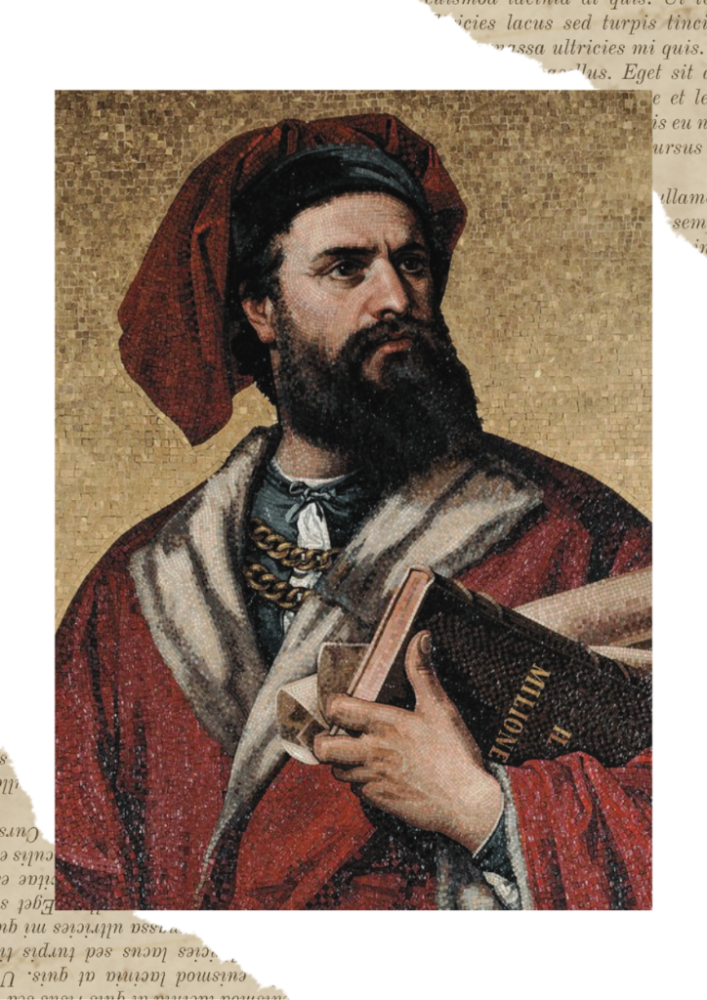
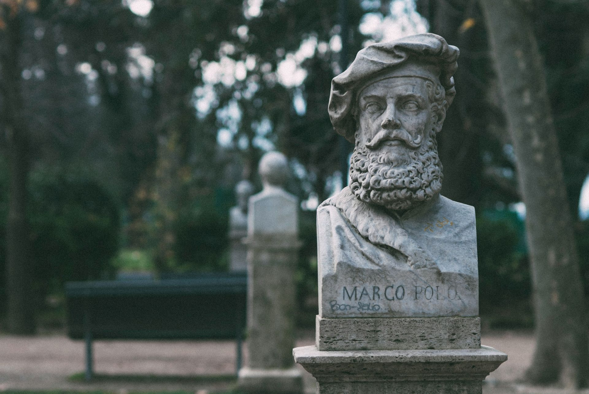
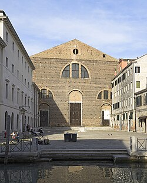
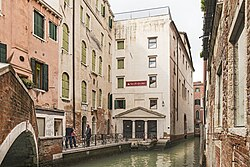
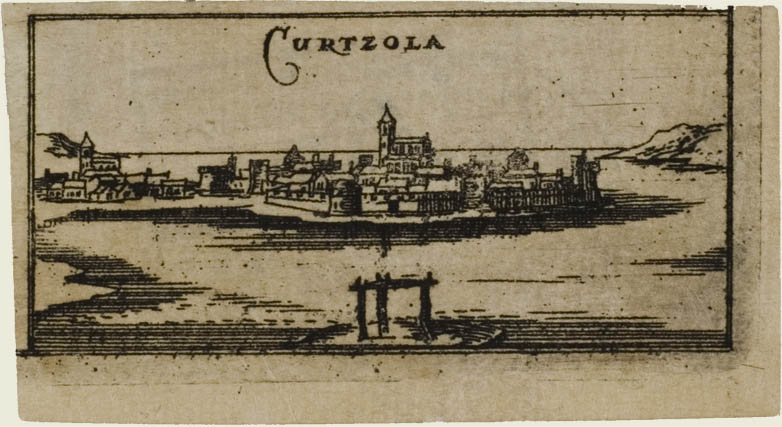

Putovanje Marka Pola

Ploča kule zatočenja Marka Pola

Novine napisane po dolasku Marka Pola na otok

Kuća Marka Pola u Korčuli

Marko Polo u mladim danima

Kip Marka Pola u Korčuli

Crkva u Veneciji, San Lorenzo di Venezia

Kuća Marka Pola u Venciji

Korčula u vrijeme Marka Pola